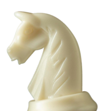

превратите уездный город в столицу земного шара

Чтобы поддержать Международный васюкинский турнир посетите лекцию на тему:
«Плодотворная дебютная идея»

и cеанс одновременной игры в шахматы на 160 досках гроссмейстера О. Бендера
| Место проведения: | Клуб «Картонажник» |
| Дата и время мероприятия: | 22 июня 1927 г. в 18:00 |
| Стоимость входных билетов: | 20 коп. |
| Плата за игру: | 50 коп. |
| Взнос на телеграммы: | 100 руб. 21 руб. 16 коп. |
Этапы преображения васюков
Будущие источники обогащения васюкинцев Строительство железнодорожной магистрали Москва-Васюки
Строительство железнодорожной магистрали Москва-Васюки
 Строительство дворца для турнира
Строительство дворца для турнира
 Открытие фешенебельной гостиницы «Проходная пешка» и других небоскрёбов
Открытие фешенебельной гостиницы «Проходная пешка» и других небоскрёбов
 Размещение гаражей для гостевого
Размещение гаражей для гостевогоавтотранспорта
 Поднятие сельского хозяйства в радиусе на тысячу километров: производство овощей, фруктов, икры, шоколадных конфет
Поднятие сельского хозяйства в радиусе на тысячу километров: производство овощей, фруктов, икры, шоколадных конфет
 Постройка сверхмощной радиостанции для передачи всему миру сенсационных результатов
Постройка сверхмощной радиостанции для передачи всему миру сенсационных результатов
 Создание аэропорта «Большие Васюки» с регулярным отправлением почтовых самолётов и дирижаблей во все концы света, включая Лос-Анжелос и Мельбурн
Создание аэропорта «Большие Васюки» с регулярным отправлением почтовых самолётов и дирижаблей во все концы света, включая Лос-Анжелос и Мельбурн